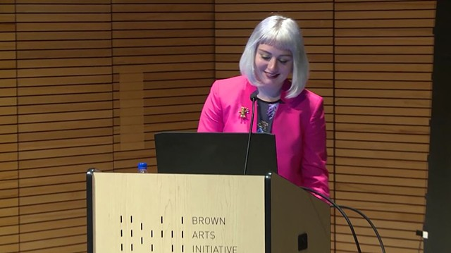
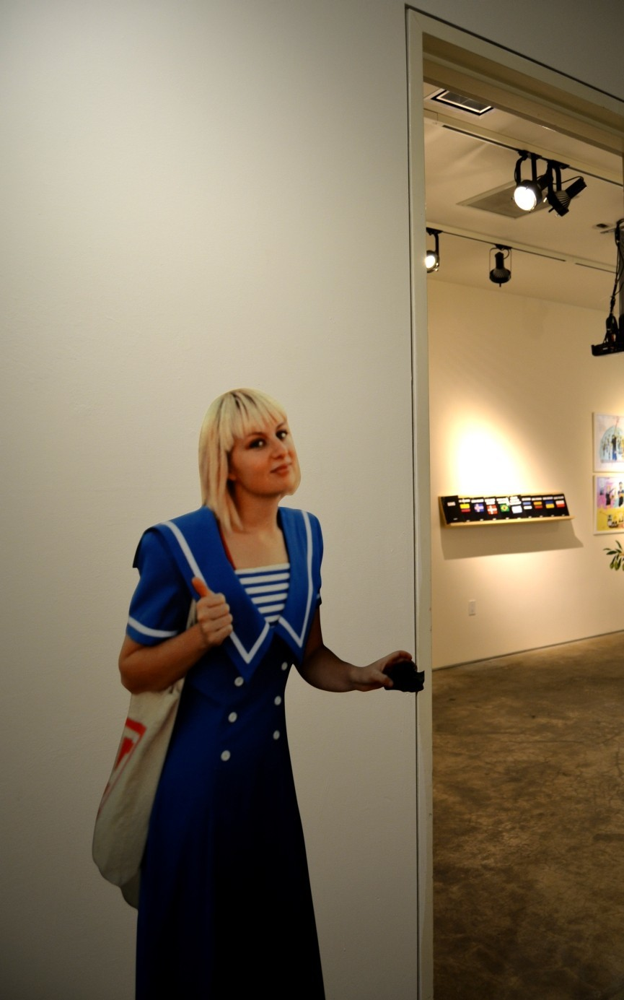

She is an artist who creates new forums for discussions about feminism in spaces frequently hostile toward women, femmes, and non-binary people.

She is currently a visiting Assitant Professor of Art at Carnegie Mellon

She is Known for creating the "Council on Gender Sensitivity and Behavioral Awareness" in World of Warcraft, and a project named "BANGED" about women who have had relationships with alt-right pickup artist Roosh V